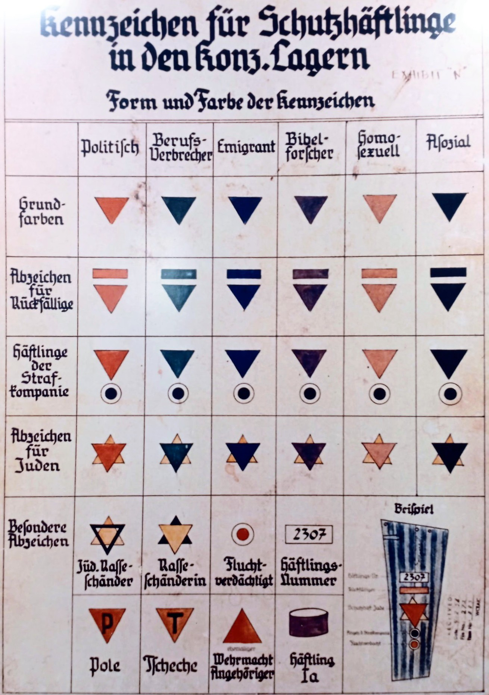

Dans les camps de concentration nazis, chaque détenu portait un insigne textile cousu sur sa tenue. Ce système de marquage, mis en place par la SS, permettait d’identifier immédiatement la catégorie du prisonnier, son origine, et parfois son statut particulier. Il s’agit d’un outil de contrôle et de déshumanisation, devenu l’un des symboles les plus marquants du système concentrationnaire.
Les détenus juifs portaient souvent deux triangles superposés formant une étoile :
Certaines combinaisons rares existaient, comme les détenus juifs également classés Témoins de Jéhovah, identifiés par une étoile jaune‑violette.
Des lettres indiquaient la nationalité du détenu :
Ce système de classification permettait aux SS d’organiser le travail forcé, de hiérarchiser les détenus, d’identifier les groupes à surveiller de près, et de stigmatiser les catégories jugées « indésirables ». Il reflète la logique de déshumanisation au cœur du système concentrationnaire.